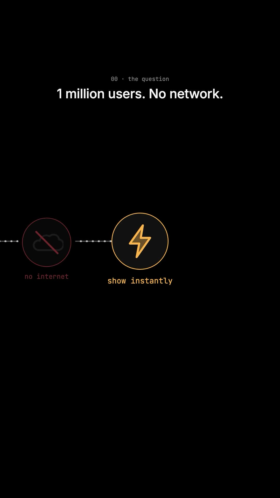
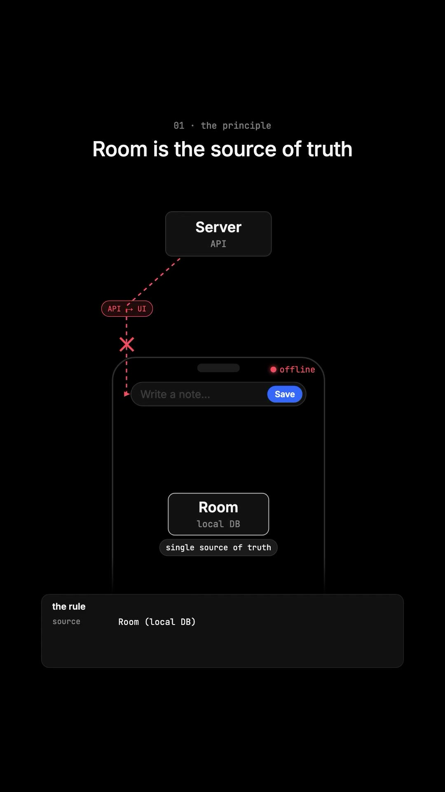
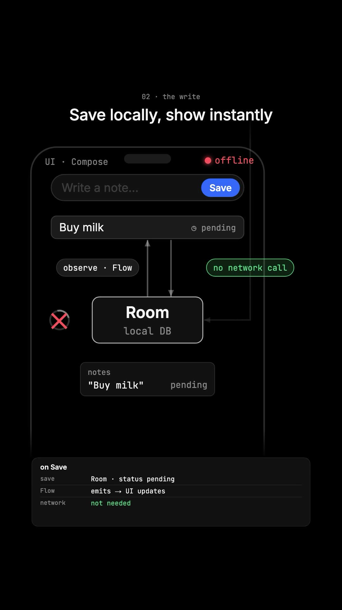
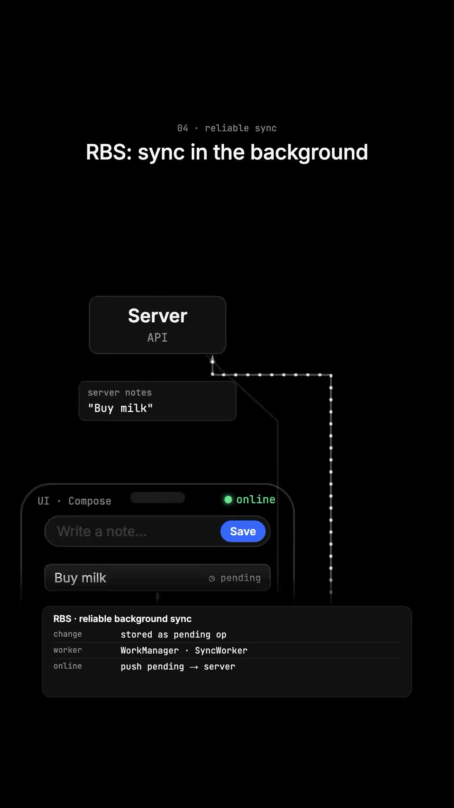
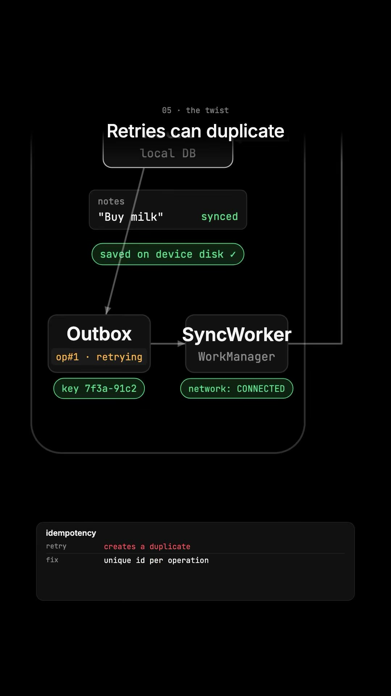
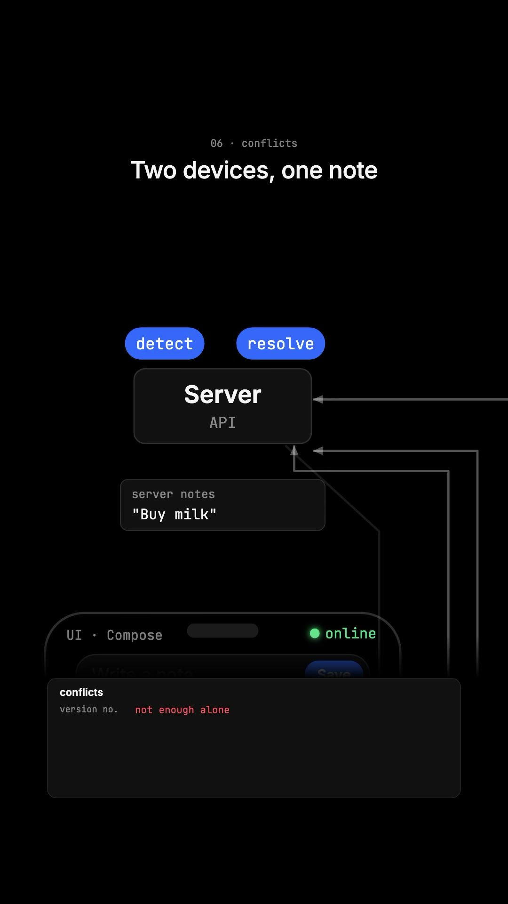

Executive Summary
A premier system design interview question for mobile and client-side engineers asks: "A user is inside an underground subway without cellular reception. They author a critical note and tap 'Save'. How do you guarantee the note appears instantly, never gets lost if the app process is terminated, and synchronizes cleanly to cloud servers once connectivity returns without duplicate entries or data corruption?"
Naive client designs make network calls directly on button press, displaying blocking loading spinners or failing with network timeout toasts. Production mobile applications (Notion, Linear, WhatsApp, Google Keep) adopt an Offline-First Architecture. In this technical blueprint, engineer TheCodingShef details the 4 pillars of offline resilience: Single Source of Truth local persistence, Reliable Background Synchronization (RBS), Idempotency Keys, and Conflict Resolution.
Core Visual Demonstrations






The 4 Pillars of Offline-First Engineering
1. The Local Database as Single Source of Truth (SSOT)
The most critical architectural principle: The UI must never communicate directly with cloud APIs.
- The UI solely observes a reactive query from the local database (SQLite via Room on Android, SwiftData/CoreData on iOS, IndexedDB/WatermelonDB on Web).
- When the user taps "Save", the app writes synchronously to the local database on disk with status
SYNC_STATUS = 'PENDING'. - The database stream emits the new item immediately, updating the screen in under 16ms with zero network latency or loading spinners.
2. Reliable Background Synchronization (RBS & The Outbox Pattern)
Saving to local disk is insufficient; the change must survive application force-quits and operating system process reboots.
- Every mutation (create, edit, delete) is appended to an internal
pending_operationsqueue table on device disk. - A persistent background task (e.g. Android
WorkManageror iOSBGAppRefreshTask) registers a network connectivity constraint. - When the operating system detects valid Wi-Fi or LTE, the background worker wakes up and drains pending operations in sequential FIFO order.
3. The Network Drop Dilemma: Idempotency Keys
The Failure Scenario: The mobile worker sends POST /api/notes with note content. The backend database commits the note successfully. However, before the HTTP 200 OK response reaches the mobile phone, the train enters a tunnel and the TCP connection resets.
The client assumes the request failed. Upon re-establishing connectivity, the worker re-submits the POST request. Without protection, this creates duplicate notes.
The Solution: Every local mutation is generated with an immutable client-side UUID:
// Client Header
POST /api/notes
X-Idempotency-Key: 8a7f4e2b-92bc-4c22-b6cf-d30917281f9a
{
"title": "Buy groceries",
"created_at": 1729864200
}The server caches recent idempotency keys in Redis. If a request arrives with an already-processed key, the server simply returns the cached response without re-executing the database write.
4. Multi-Device Conflict Resolution
If a user edits the same note on their laptop while offline and on their phone while offline:
- Last-Write-Wins (LWW): Compares timestamps. Prone to clock skew and data loss.
- Field-Level Merging: If user edits title on phone and body on laptop, merge both attributes cleanly.
- CRDTs (Conflict-free Replicated Data Types): Mathematical data structures (e.g. Yjs, Automerge) that allow concurrent edits to merge deterministically without a central coordinating server.